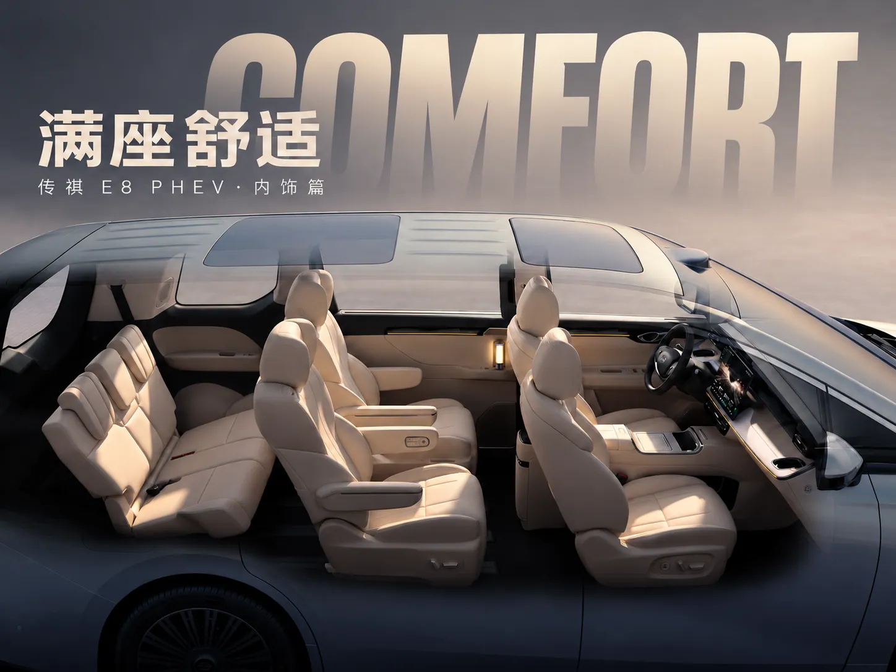

E8 film study
- Type
- Self-initiated film study
- Role
- Concept, direction, AI generation and edit
- Year
- 2026
Can generated footage hold up to automotive-grade detail? Three short films around one MPV, covering exterior, interior and everyday life, test the light signatures, panel lines, leather grain and the people who use it.
Self-initiated research using the GAC Trumpchi E8 PHEV as the subject. Not commissioned by GAC.

